Student Self-Enrolment on the Ready Student Portal
Students choose and manage their own subjects — online, in minutes, within the guardrails
their institution sets. No forms, no phone queues, no manual data entry for staff.
Built by the Dynamite Squad · ReadyTech — Ready Student (JR Plus) Walkthrough by Sreeram Goalla · Product, Business Analysis & QA
Introduction
Traditionally, every HE subject enrolment is keyed in by admissions or student-services staff.
Self-enrolment moves that routine work to the student — while the system quietly enforces every
institutional rule in the background.
🕐
Less admin effort
Routine subject enrolments no longer pass through staff hands — freeing teams for the exceptions that genuinely need them.
🎓
Student autonomy
Students pick their electives and shape their study plan themselves, from any device, whenever the enrolment window is open.
🛡️
Rules always enforced
Requisites, program structure and enrolment windows are checked live. Unlike admin-led enrolment, students can never override them.
⚡
Real-time feedback
Study load, requisite warnings and enrolment deadlines are visible while the student decides — not discovered after the fact.
My role
I tested this feature and then produced this walkthrough from a test environment, to show clients and internal teams how student self-enrolment works and what an institution needs to switch it on.
Product Manager
Told the self-enrolment story to clients
Built the demo narrative: value first, then institution setup, then the student journey from login to adjusting subjects.
Framed the benefits by audience: less admin effort for staff, autonomy for students, and rules that are always enforced.
Made the rollout prerequisites clear for institutions: the feature switch, the enrolment pattern and the enrolment window.
Showcased the mobile experience as a selling point for students enrolling from any device.
What I produced:Client demoValue propositionRollout prerequisites
Business Analyst
Made the setup and the rules easy to follow
Documented setup from the institution's side: the Features page, the enrolment pattern and academic-period dates.
Explained the guardrails in plain language: requisites, program structure, study load and enrolment windows.
Wrote the self-enrolment checklist used to configure test and demo environments.
What I produced:Setup checklistBusiness rulesProcess walkthrough
Quality & Testing
Verified every screen before showing it
Ran the full student journey on a test environment and captured each step as evidence, in 25 screenshots.
Tested save and resume, requisite alerts, the review step and adding or dropping subjects after enrolment.
Tested the mobile layout of the enrolment flow.
Used test data only, so the walkthrough can be shared safely.
What I produced:Test evidenceScreenshot packRegression scenarios
1Setup — before students can enrol
Everything the student experiences is controlled by the institution on
Ready Student Core. Three switches matter: turning the capability on,
choosing the enrolment pattern, and opening the enrolment window.
a. Turn the capability on — feature flags
Self-enrolment is enabled per provider from the Core Features page
(Help → Features). The switch is
"Ready Student Portals HE Student Self Enrolment" — it requires
Ready Student Portals Higher Ed (and the base portal flags) to already be on.
The Student Portal picks the change up automatically; nothing to deploy.
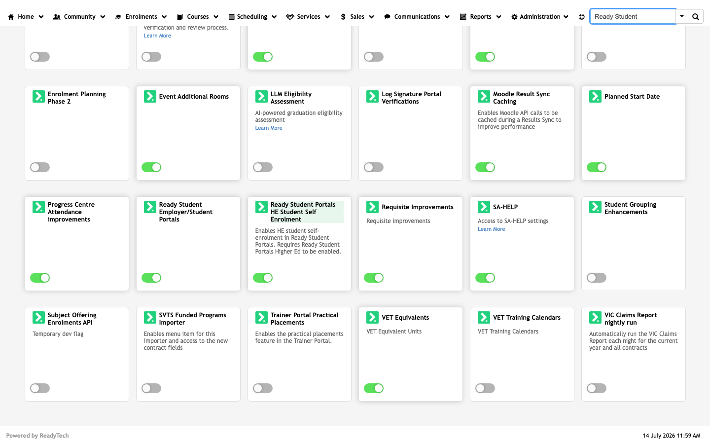
The self-enrolment switch. "Ready Student Portals HE Student Self Enrolment" toggled on, on the Core Features page.
The rules engine behind the wizard is Curriculum Builder — it must also be
enabled, under Development feature flags on the same page. This one is managed by
superuser (level 0) accounts only, and is what powers requisite and program-structure
validation during enrolment.
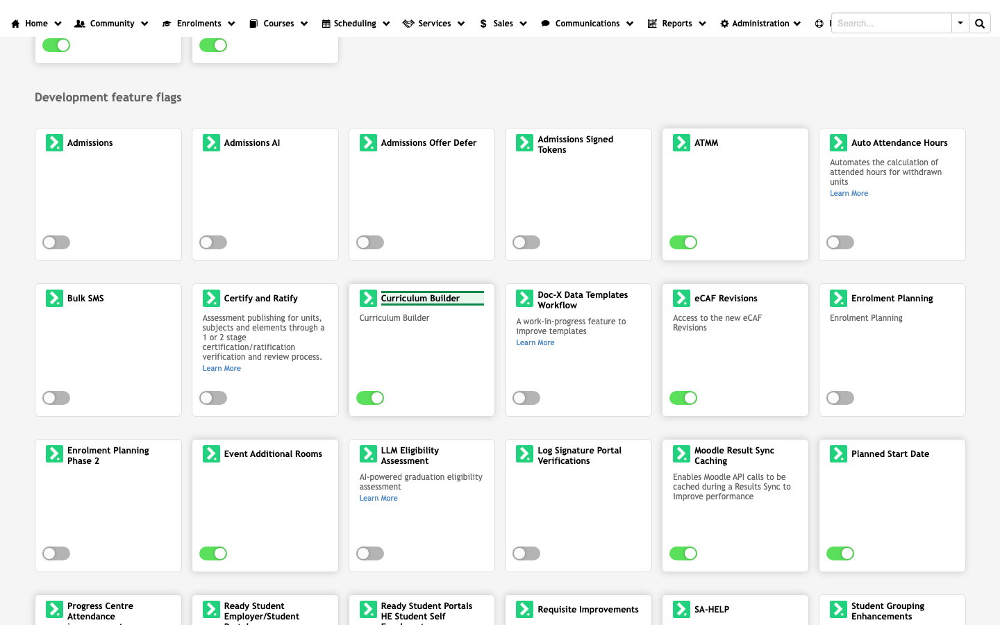
The curriculum engine. The "Curriculum Builder" flag (Development feature flags, superuser-only) — the same engine that validates admin-led enrolment.
b. Choose the enrolment pattern
The Subject Enrolment Pattern (Administration → Preferences → Enrolment)
decides which wizard students get: Yearly — one wizard covering every study
period in the calendar year, or Period-based — one wizard per semester.
It's a system-wide default that can be overridden per course, so different programs can run
different intake models side by side.
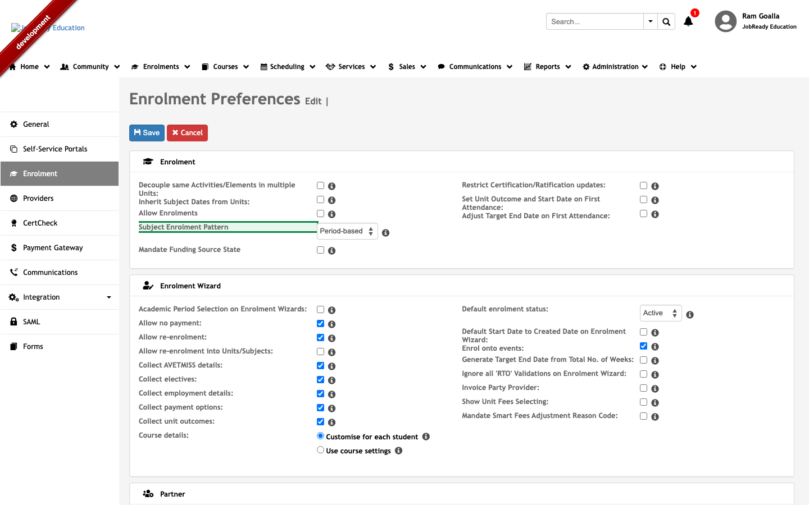
Enrolment Preferences. The "Subject Enrolment Pattern" dropdown — this environment runs Period-based, which is why the demo shows a per-semester flow.
c. Open the enrolment window
Each academic period carries its own Self-Enrolment Open and Close dates,
plus a Drop Subjects Deadline — all set on the Academic Period record.
These dates gate everything: before the open date or after the close date, the wizard simply
isn't reachable, and the "enrolment open" banner never appears.
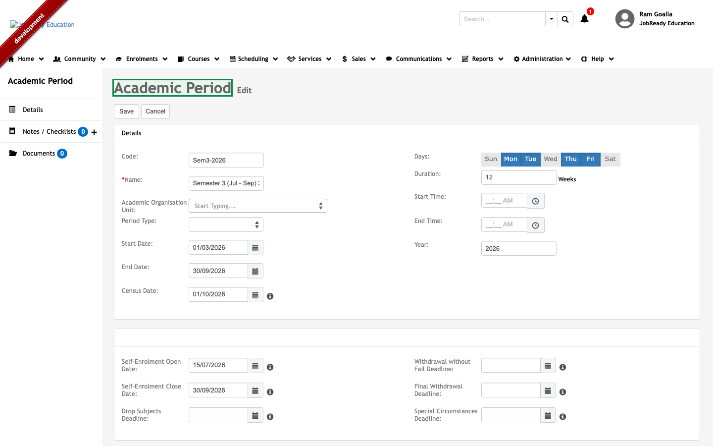
Where it's configured — the Academic Period edit page. Each study period (here Semester 3 (Jul – Sep) 2026, code Sem3-2026) is a record on Ready Student Core with its own details, dates and census date. The self-enrolment fields live on this same page, just below the period details.
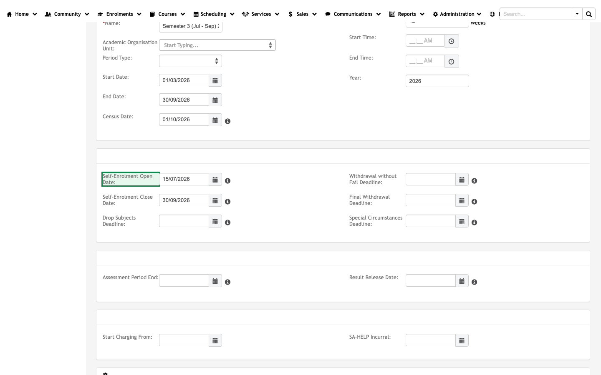
The window, per period. Self-Enrolment Open (15/07/2026) and Close (30/09/2026) dates on the same Academic Period edit page — with the drop deadline and withdrawal deadlines alongside.
🗝️
The setup story in one line: flip the flag, pick the pattern, set the dates —
Ready Student Core stays the single source of truth for who can enrol, in what, and when.
2Signing in — the Student Portal login
Students access the portal through a clean, branded login page. The institution's logo
appears on the left — customisable per provider — with a simple username and password form
on the right. A "Forgot password?" link is available for self-service recovery.
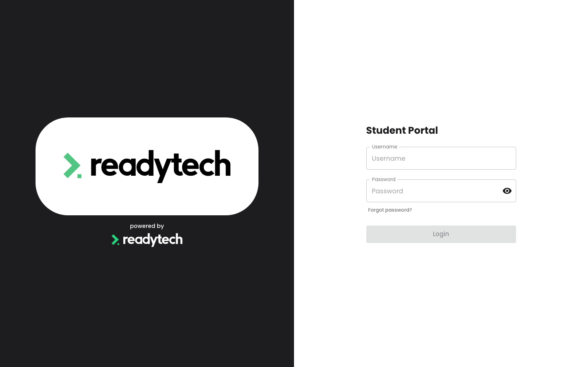
The Student Portal login. A split-screen layout — the institution's branding on the left, the login form on the right. Username and password with a "Forgot password?" recovery link. The login page adapts per tenant, showing each provider's own logo.
🏢
Multi-tenant
Each institution gets their own branded login page with their logo — powered by the same platform, isolated per provider.
🔑
Self-service recovery
"Forgot password?" triggers a password reset flow — no need to call the institution's help desk.
🔐
MFA supported
Multi-factor authentication can be enabled for an extra layer of security, with trusted-device support so students aren't prompted on every login.
👤
Student credentials are managed in Ready Student Core — when staff create or import a student
record, a portal login is provisioned automatically. The student receives their credentials
(typically via email) and can sign in immediately.
3The journey begins on the portal
The student signs in to the Ready Student Portal. When an enrolment window is open,
the portal tells them — front and centre on their course page, with the closing date —
so nobody misses their window.
Login→Dashboard→"Enrolment is open" banner→Start Enrolment
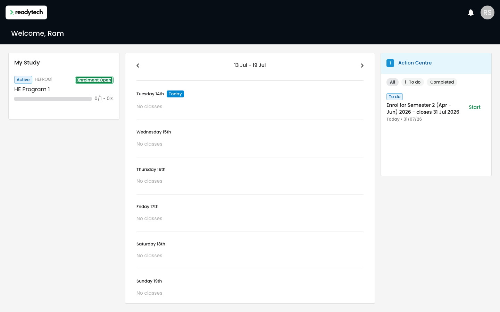
The student can't miss it. The moment the window opens, the dashboard flags it twice — an Enrolment Open badge on their study card, and an "Enrol for Semester 2 — closes 31 Jul 2026" task in the Action Centre with a one-click Start.
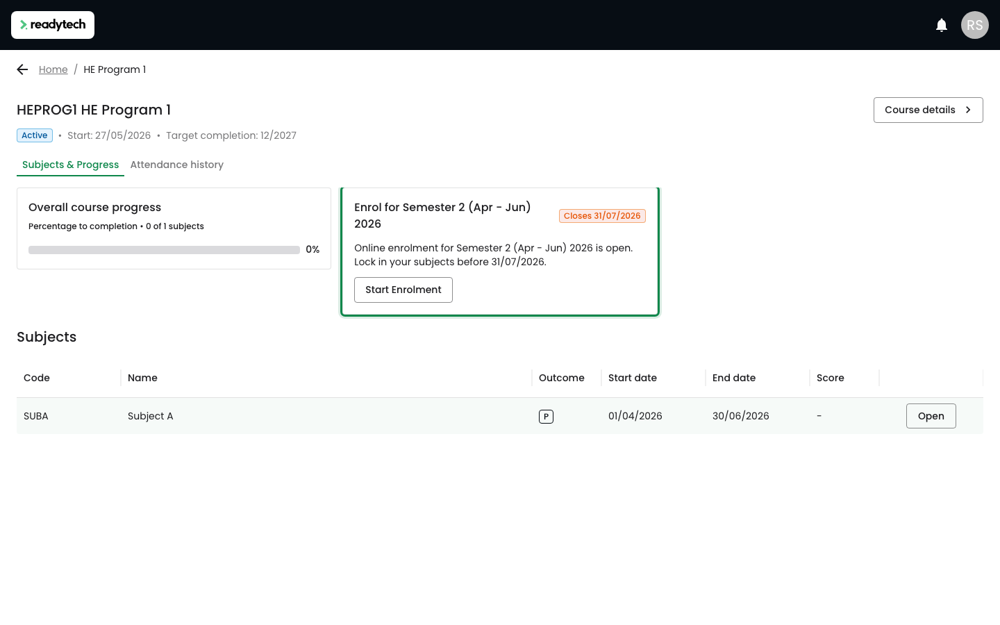
Course page with the enrolment invitation. "Online enrolment for Semester 2 is open. Lock in your subjects before 31/07/2026" — one click on Start Enrolment launches the wizard. The banner only appears while the institution's enrolment window is open.
4A guided, step-by-step wizard
The wizard lays the whole process out before anything starts: one step per study period,
then a final review. The student always knows where they are and what's left.
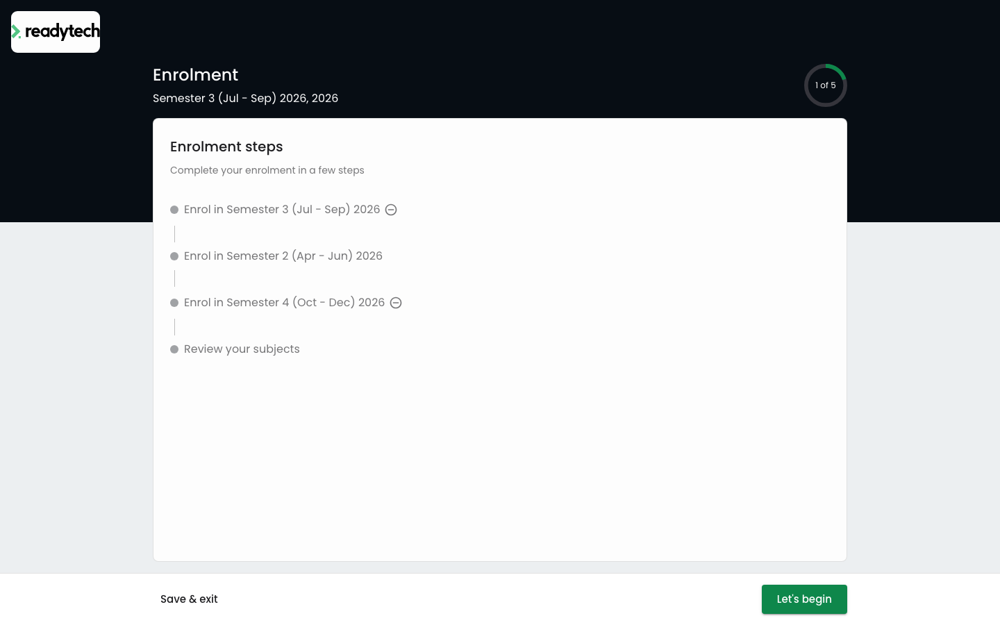
Enrolment steps. Every period in scope — here Semesters 2, 3 and 4 of 2026 — is a step, finishing with a review. Optional periods can be removed; the student's primary period cannot.
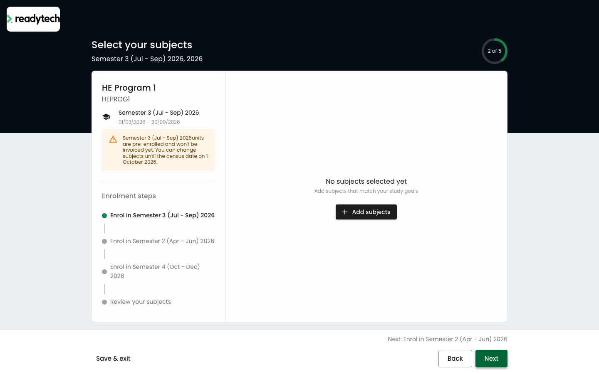
Selecting subjects for a period. The left rail keeps the program, period dates, key notices (like the census date) and progress visible throughout. The student starts with a clean slate and builds their selection.The subject catalogue. Every offering available to this student, in this period, in their program — searchable by name or code and filterable by Core / Elective. Credit points, location and attendance mode are right on the card.
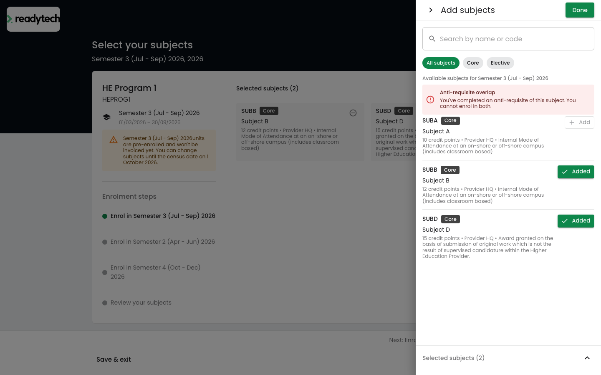
Adding is one tap. The running "Selected subjects" counter keeps score at the bottom of the drawer.
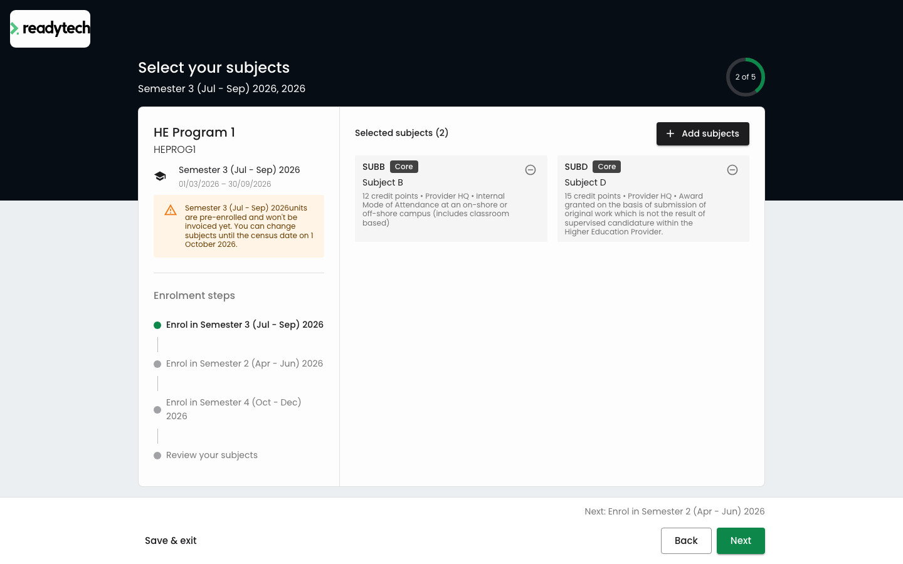
The period takes shape. Selected subjects appear as cards with their credit points — removable up until the student confirms.
5Requisite Rules/Validations
This is the heart of the feature. The student is free to choose — but the platform enforces
the institution's rules at every step, in real time. And unlike admin-led enrolment,
there is no override.
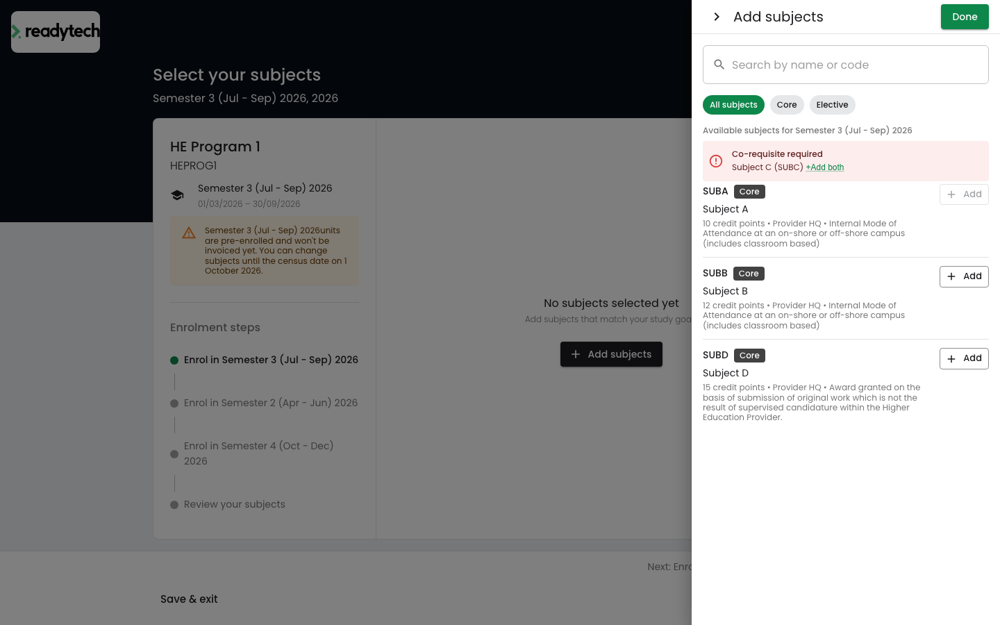
Requisites, enforced live. Subject A requires Subject C as a co-requisite — so its Add button is disabled and the drawer explains exactly why, with a one-click "+ Add both" shortcut to resolve it. No invalid combination can ever be submitted.
🔗
Requisite rules
Pre- and co-requisites are evaluated as the student browses, and re-checked at confirmation. Failing combinations are blocked with a clear explanation.
🏗️
Program structure
Only subjects that belong to the student's program are offered. Anything outside their curriculum simply never appears.
⚖️
Study load visibility
Credit points are totalled against the standard load for the study period as the student selects, so they can see exactly how full their semester is.
📅
Enrolment windows
Open and close dates set per academic period control access completely — outside the window, the wizard is unreachable.
💡
Worth calling out to clients: validation is done by the same curriculum engine
that powers admin-led enrolment — one source of truth for rules, whether staff or students drive the process.
6Life happens — save & pick up later
Choosing subjects is a big decision. Students can save their progress at any point and come back —
their selection is waiting exactly where they left it, on any device.
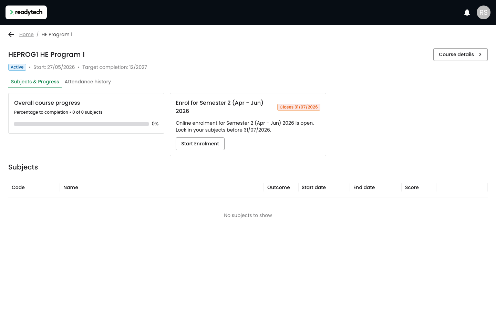
"Save & exit" returns the student safely to their course page — nothing submitted, nothing lost.
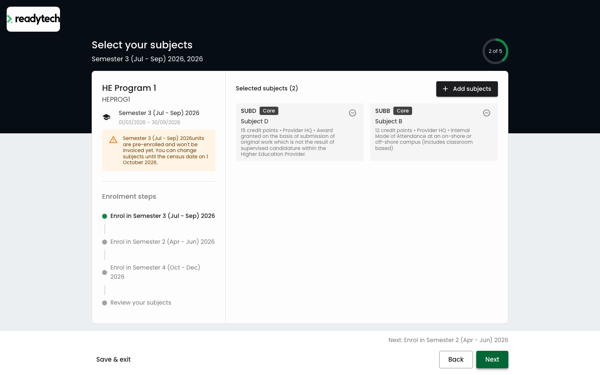
Back where they left off. Re-entering the wizard restores both previously selected subjects automatically.
7Review, confirm — enrolled
Before anything is committed, the student sees a full summary of every period and every subject.
One tap on Confirm runs the final validation pass and writes the enrolment into the
student management system — instantly.
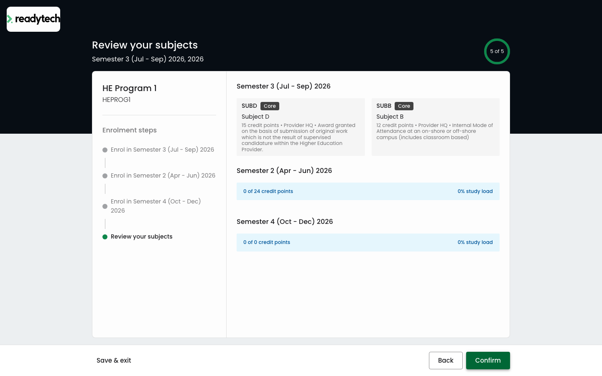
The review step. A read-only summary — requisites are re-verified here one final time before the Confirm button activates.
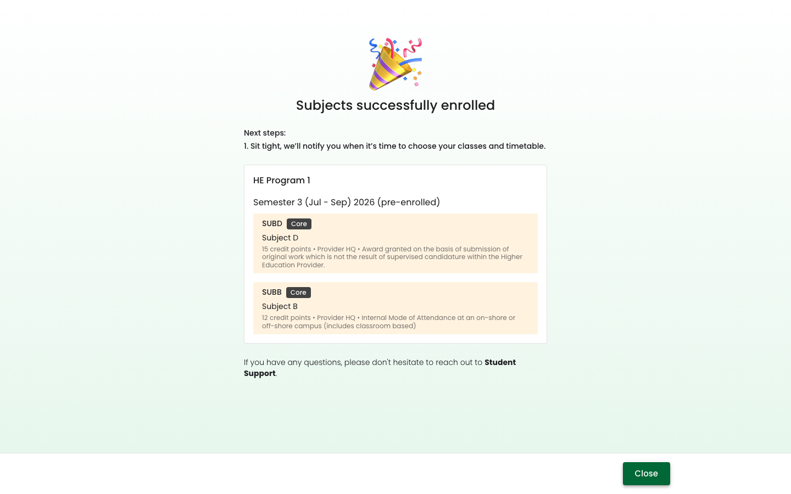
🎉 Done. Subjects are enrolled in the SMS in real time — with clear next steps for the student. Staff see the enrolment immediately in Ready Student Core; nothing to re-key.
🔒
Safe by design: the confirmation is protected against double-submission, and if any rule fails
at the last moment (e.g. a requisite), the whole submission rolls back — a student can never end up half-enrolled.
8Changed your mind? Adjust within the window
Enrolment isn't a one-shot decision. Until the institution's deadline, students can return
and adjust — dropping subjects or adding new ones — through the same familiar experience.
Adjust your subjects→Drop / add→Review→Subjects adjusted
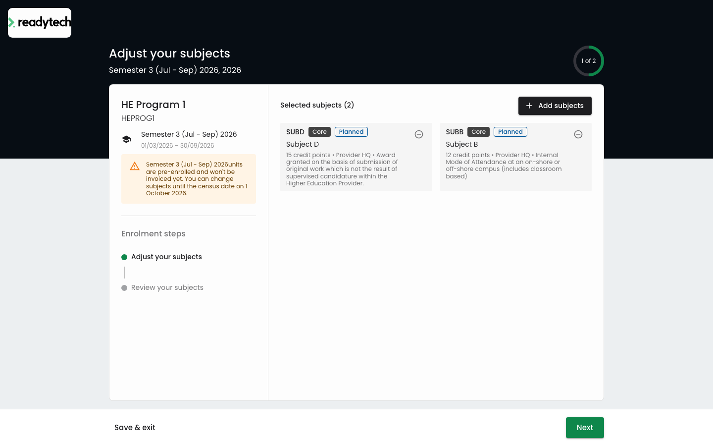
The adjust flow. The student's current subjects appear with a Planned status badge — each one removable while the adjustment window is open.
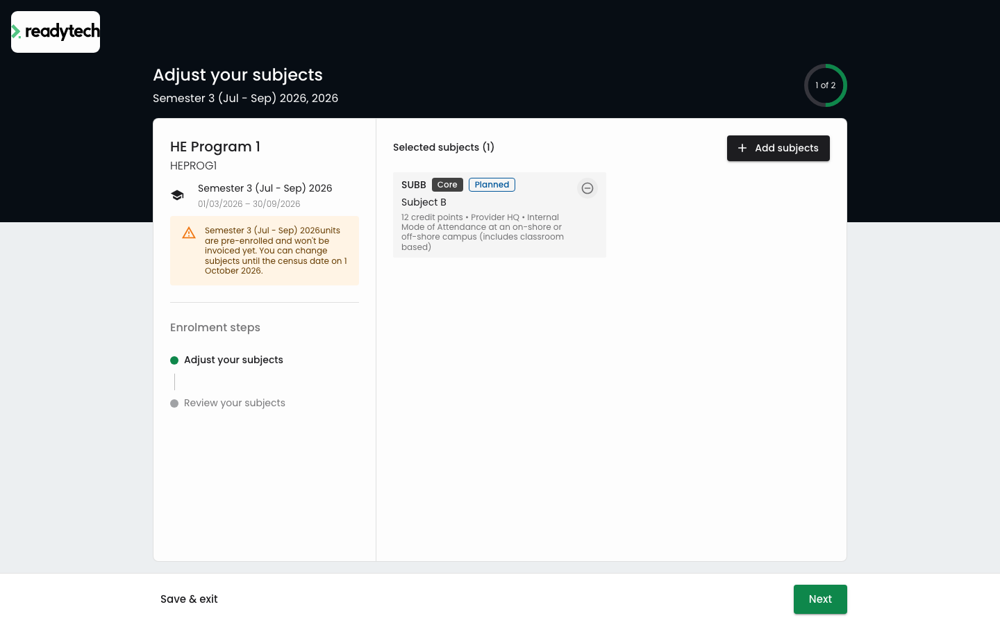
Dropping Subject D. One tap and the selection updates — the drop is only committed at confirmation.
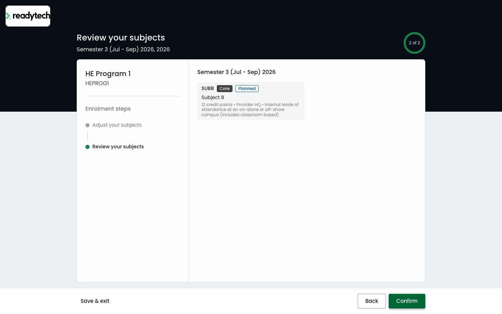
A short two-step flow. Adjust → review → confirm. Quick for the student, fully validated for the institution.
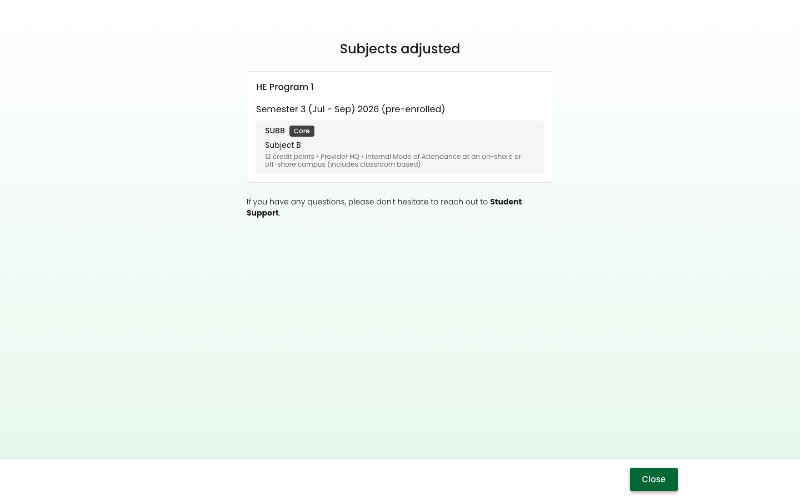
Adjusted. The withdrawal is processed with the correct outcome behind the scenes, and the student's updated subject list is confirmed on screen.
9Built for every screen — mobile-first
The entire self-enrolment experience is fully adaptive. Students on phones get a
purpose-built mobile layout — not a squeezed desktop view — with the same guardrails,
the same wizard, and the same instant confirmation.
📱
Server-side adaptive design: the portal detects the device on the server and
delivers a mobile-optimised layout automatically — no pinch-to-zoom, no horizontal scrolling.
Every screen shown below is the real mobile experience, not a responsive breakpoint.
Discovery & entry
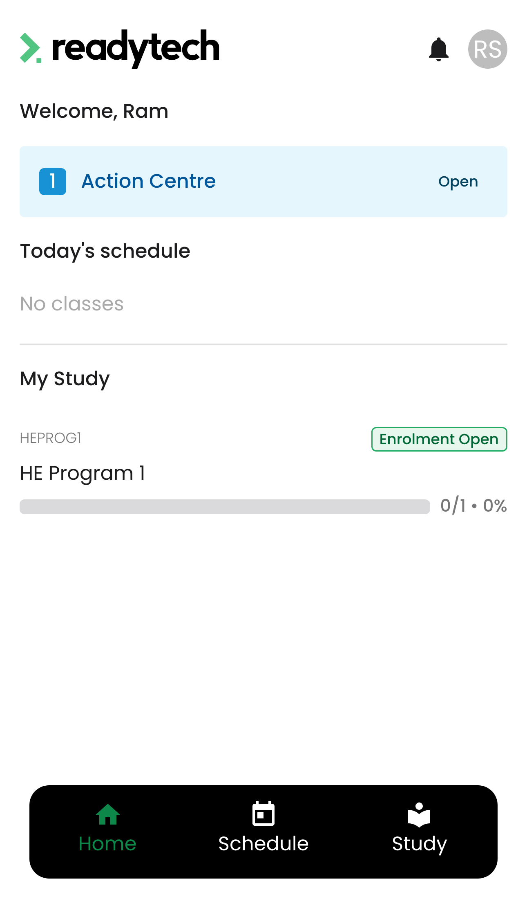
Mobile dashboard. The Enrolment Open badge is visible on the study card and the Action Centre is one tap away. The floating bottom navigation keeps Home, Schedule and Study within reach.
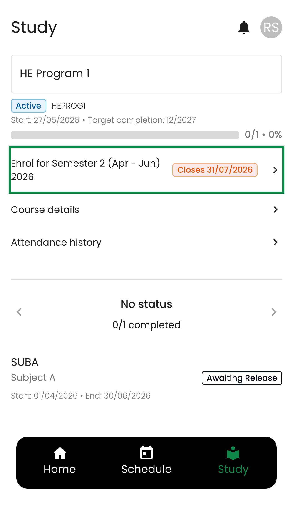
Study page with enrolment invitation. "Enrol for Semester 2 — Closes 31/07/2026" is a tappable card that launches the wizard. Subject status badges (Awaiting Release) are right on the card.
The wizard on mobile
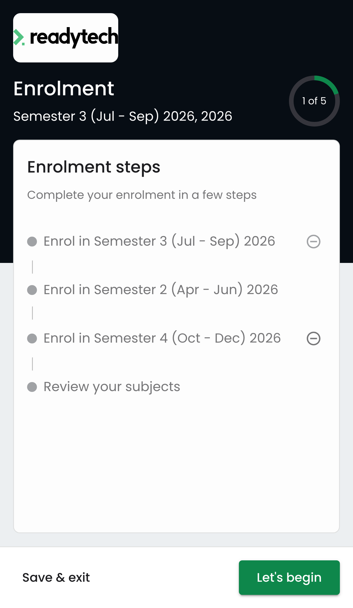
Enrolment steps. The same step-by-step stepper, with progress ring, "Save & exit" and "Let's begin" — all thumb-reachable at the bottom of the screen.
Selecting subjects
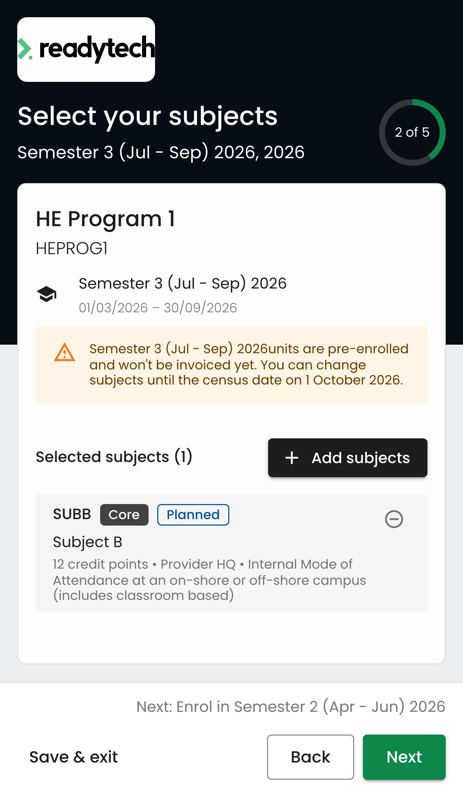
Select subjects on mobile. Program info, period dates, the census-date notice and selected subjects are stacked vertically. Credit points, location and attendance mode are all visible without scrolling sideways.
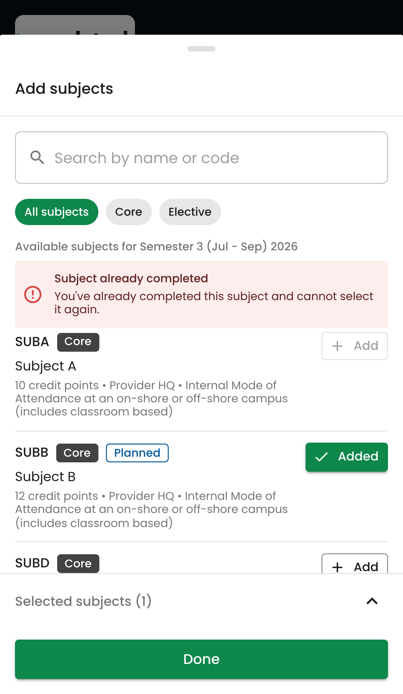
Add subjects — bottom drawer. The subject catalogue opens as a swipeable bottom sheet. Search, Core/Elective filters and the "Added" toggle all work identically to desktop. The "Selected subjects" counter and Done button anchor at the bottom.
✅
Same rules, same flow, different form factor. Requisite validation, study-load
tracking, save & resume, review and confirm — every guardrail that exists on desktop works
identically on mobile. Students can start on their laptop and finish on their phone.
Summary
What the Dynamite Squad delivered, in one view.
Capability
What it means for the institution
Enrolment modes
Three flows from one wizard: whole-year (all periods in a calendar year), single period (one semester), and adjust (change an existing enrolment). Institutions choose the pattern that matches their intake model.
Guided subject selection
Search, Core/Elective filtering, credit points, location and attendance mode per offering — scoped automatically to the student's program and period.
Real-time guardrails
Requisite evaluation, program-structure validation and study-load visibility while the student selects — with no student override possible.
Enrolment windows
Open, close and drop deadlines configured per academic period in Ready Student Core gate all access, down to the day.
Save & resume
Progress persists across sessions and devices until the student is ready to commit.
Add & drop
Students adjust their own enrolments within the allowed window; withdrawals are recorded with the correct outcome automatically.
Instant SMS integration
Confirmed selections write straight into Ready Student Core — staff see them immediately, with zero re-keying.
Mobile-ready
A fully adaptive mobile experience — server-side device detection delivers a purpose-built layout, not a responsive compromise. Students can enrol from any device.
Controlled rollout
The entire capability is switched per provider — institutions opt in when they're ready.
🚀
The takeaway: students get a modern, consumer-grade enrolment experience;
institutions keep complete control of the rules; and staff get their time back.